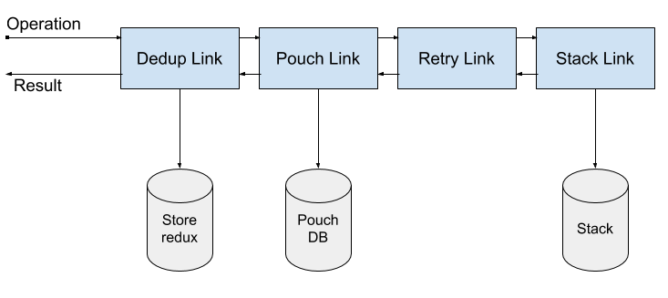

If you don’t use React, you can still benefit of it, see below.
Setup¶
Install¶
npm install --save cozy-client
or
yarn add cozy-client
To get started using cozy-client with (p)React, you need to create a CozyClient, and a CozyProvider:
CozyClientis the master of your data: it manages data queries and their status ;CozyProviderinjects the client into components’ context.
Creating a client¶
import CozyClient from 'cozy-client'
const client = new CozyClient({
uri: 'http://cozy.tools:8080',
token: '...'
})If you need guidance to get the URI of your instance and/or the token, see (https://cozy.github.io/cozy-docs-v3/en/dev/app/#behind-the-magic).
Creating a provider¶
All components that we want to connect to data need access to the client. We could pass it as a prop from component to component, but it’ll quickly get tedious.
We recommend that you use a CozyProvider somewhere high in your app. It will make the client available to all your components using the context:
import CozyClient, { CozyProvider } from 'cozy-client'
const client = new CozyClient({
/*...*/
})
ReactDOM.render(
<CozyProvider client={client}>
<MyApp />
</CozyProvider>,
document.getElementById('main')
)Using the client¶
An instance of CozyClient allows you to query and mutate (update) data, here’s how it looks:
import CozyClient from 'cozy-client'
const client = new CozyClient({
/*...*/
})
client.query(
client.find('io.cozy.todos').where({ checked: false })
).then(
({ data }) => console.log(data)
)
client.mutate(
client.create('io.cozy.todos', { label: 'Buy bread' })
).then(
({ data }) => console.log(data.id)
)Requesting data¶
To make it easy to fetch data and make it available to your component, we provide a Render Props component called Query. Basic example of usage:
import React from 'react'
import { Query } from 'cozy-client'
const query = client => client.find('io.cozy.todos').where({ checked: false })
const TodoList = () => (
<Query query={query}>
{({ data, fetchStatus }) =>
fetchStatus !== 'loaded'
? <h1>Loading...</h1>
: <ul>{data.map(todo => <li>{todo.label}</li>)}</ul>
}
</Query>When we use Query to “wrap” a component, three things happen:
- The query passed as a prop will be executed when Query mounts, resulting in the loading of data from the client-side store, or the server if the data is not in the store ;
- Query subscribes to the store, so that it is updated if the data changes ;
- Query pass the result of the query as props to the children function.
The available props¶
data: an array of documentsfetchStatus: the status of the fetch (pending,loading,loadedorerror)lastFetch: when the last fetch occuredhasMore: the fetches being paginated, this property indicates if there are more documents to load
Making queries¶
cozy-client provides you with a very easy to use DSL to define document queries:
import CozyClient from 'cozy-client'
const client = new CozyClient({
/*...*/
})
const query = client.find('io.cozy.todos').where({ checked: false }).sortBy({ label: 'desc' })Mutating data¶
In addition to fetching data using queries, cozy-client also helps you mutate (update) data.
import React from 'react'
import { Query } from 'cozy-client'
const query = client => client.find('io.cozy.todos').where({ checked: false })
const createMutations = (client, ownProps) => ({
addTodo: label => client.create('io.cozy.todos', { label })
})
const App = () => (
<Query query={query} mutations={createMutations}>
{(result, addTodo) =>
<TodoList data={result.data} onAddTodo={addTodo} />
}
</Query>Updating queries¶
Because we cache data locally in a normalized way (that is, queries data are stored as arrays of documents IDs), a mutation that updates a document already stored in the cache will see its result automatically integrated into the cache, which in turn will update the UI automatically. But if we create a new document (a todo for instance) and we want to see it appear in the UI (a todo list displayed using a query), we’ll need to manually update the query’s data. In order to do that, we need to give a name to the query using the as option:
import React from 'react'
import { connect, find } from 'cozy-client'
const query = find('io.cozy.todos').where({ checked: false })
const TodoList = ...
export default connect(query, { as: 'allTodos' })(TodoList)Now we can define how the query’s data must be updated using the updateQueries option of withMutation:
import { withMutation } from 'cozy-client'
const AddTodo = ({ mutate }) => {
...
}
export default withMutation(
label => link => link.collection('io.cozy.todos').create({ label }),
{
updateQueries: {
allTodos: (previousData, result) => [
result.data[0],
...previousData
]
}
}
)(AddTodo)options.updateQueries takes an object where query names are the keys and reducer functions are the values. If you are familiar with Redux, defining your updateQueries reducers is very similar to defining Redux reducers. The first argument to the reducer function will be the last data fetched (that is displayed in the UI), and the second argument is the result of the mutation: if data has been created or updated, it will have a data property containing the mutated data.
Features¶
Network layer (Cozy Link)¶
Cozy Link is a simple yet powerful way to describe how you want to get the result of a query. Think of it as a sort of “middleware”.
Links are units that you can chain together to define how each query should be handled: this allows us to use different sources of data, or to control the request lifecycle in a way that makes sense for your app. The first link operates on an operation object and each subsequent link operates on the result of the previous link:

In the chain example pictured above, the Dedup link would avoid re-fetching the same query, the PouchDB link would try to get the data from a local Pouch instance, and fallback to the Stack link, assisted by the Retry link that will try to fetch again the query in case of a network error.
Using links¶
To create a link to use with Cozy Client, you can import one from cozy-client or create your own. A StackLink will be setup by default, but you can instantiate it yourself:
import CozyClient, { StackLink } from 'cozy-client'
const link = new StackLink()
const client = new CozyClient({
uri: 'http://cozy.tools:8080',
token: '...',
link
})Links are designed to be composed together to form chains:
import CozyClient, { StackLink } from 'cozy-client'
import PouchDBLink from 'cozy-pouch-link'
import LogLink from '../LogLink'
const stackLink = new StackLink()
const pouchLink = new PouchDBLink({ doctypes: [...] })
const logLink = new LogLink()
const client = new CozyClient({
uri: 'http://cozy.tools:8080',
token: '...',
links: [
logLink,
pouchLink,
stackLink
]
})Authoring a link¶
There are two ways of creating a new link. First, you can instantiate a CozyLink and pass a request handling function to its constructor:
const logLink = new CozyLink((operation, result, forward) => {
console.log(JSON.stringify(operation))
return forward(operation, result)
})Or you can subclass CozyLink:
class LogLink extends CozyLink {
request(operation, result, forward) {
console.log(JSON.stringify(operation))
return forward(operation, result)
}
}At the core of a link is the request method. It takes the following arguments:
- operation: the operation definition being passed through the link ;
- result: the (maybe incomplete) result processed by the previous link ;
- forward: (optional) specifies the next link in the chain of links.
When the request method is called, the link has to return data back. Depending on where the link is in the chain, and its ability to provide the requested data, it will either use the forward callback to defer to the next link the task of providing (or completing) the data, or return back a result on its own.
Higher-Order Component (HOC)¶
If you prefer HOCs to render-prop components, we provide a higher-order component called connect. Basic example of usage:
import React from 'react'
import { connect } from 'cozy-client'
const query = client => client.find('io.cozy.todos').where({ checked: false })
const TodoList = ({ data, fetchStatus }) =>
fetchStatus !== 'loaded'
? <h1>Loading...</h1>
: <ul>{data.map(todo => <li>{todo.label}</li>)}</ul>
export default connect(query)(TodoList)When we use connect to bind a query to a component, three things happen:
- The query passed as an argument will be executed when the component mounts, resulting in the loading of data from the client-side store, or the server if the data is not in the store ;
- Our component subscribes to the store, so that it is updated if the data changes ;
- props are injected into the component: if we were to declare propTypes they would look like this:
TodoList.propTypes = {
fetchStatus: PropTypes.string.isRequired,
data: PropTypes.array
}Using withMutation higher-order component makes it easy to bind actions to your components. withMutation provides only a simple function to the wrapper component, in a prop called mutate:
import { withMutation } from 'cozy-client'
const AddTodo = ({ mutate }) => {
let input
return (
<form onSubmit={e => {
e.preventDefault()
mutate(input.value)
input.value = ''
}}>
<input ref={node => { input = node }} />
<button type="submit">Add Todo</button>
</form>
)
}
export default withMutation(
label => client => client.create('io.cozy.todos', { label })
)(AddTodo)Integrating with an existing redux store¶
cozy-client uses redux internally to centralize the statuses of the various fetches and replications triggered by the library, and to store locally the data in a normalized way. If you already have a redux store in your app, you can configure cozy-client to use this existing store:
import CozyClient from 'cozy-client'
import { combineReducers, createStore, applyMiddleware } from 'redux'
import myReducers from './myapp/reducers'
import myMiddleware from './myapp/middleware'
const client = new CozyClient({
/*...*/
})
const store = createStore(
combineReducers({ ...myReducers, cozy: client.reducer() }),
applyMiddleware(myMiddleware)
)
ReactDOM.render(
<CozyProvider client={client} store={store}>
<MyApp />
</CozyProvider>,
document.getElementById('main')
)Using the OAuth client¶
CozyClient can also be used as an OAuth client. To get started, configure the OAuth informations when creating the client:
import CozyClient from 'cozy-client'
const client = new CozyClient({
uri: 'http://cozy.tools:8080',
scope: ['io.cozy.mydoctype'],
oauth: {
clientName: 'MyClient',
softwareID: 'MyAppId',
redirectURI: 'http://localhost'
}
})scope is an array of permissions you require for your client, and oauth is a list of fields that identify your client for the user and the server. The complete list of field can be found here, although they should be camel-cased instead of snake-cased.
Obtaining a token¶
Before you can start making requests to the server, you will need to get a token. cozy-client will provide a URL to a page where the user is shown what data you want to access, and asking for his or her permission. After the user accepts these permissions, he or she is redirected to the oauth.redirectURI that you declared earlier. You will then have to give this redirected URL back to cozy-client as it contains a code, that will be exchanged for the token.
Sounds, tricky, but most of it is taken care of for you. To get started, you call client.startOAuthFlow like this:
import CozyClient from 'cozy-client'
const client = new CozyClient({
uri: 'http://cozy.tools:8080',
scope: ['io.cozy.mydoctype'],
oauth: {
clientName: 'MyClient',
softwareID: 'MyAppId',
redirectURI: 'http://localhost'
}
})
client.startOAuthFlow(openURL)The openURL parameter is a callback. It will receive the URL to the page as a parameter, and it must return a Promise that resolves with the redirected URL. How exactly you do this depends on your environment — for a mobile app you may use a WebView, in a browser maybe a new tab… Here is an example that uses the browser’s console and an experienced user:
const openURL = url => {
console.log('Please visit the following URL, accept the permissions and copy the URL you are redirected to, then come back here. you have 10 seconds.', url)
return new Promise(resolve => {
setTimeout(async () => {
const returnUrl = prompt('Paste the new URL here.')
resolve(returnUrl)
}, 10000)
})
}And that’s it! After the promise is resolved, cozy-client finishes the OAuth flow and you can start using it.
Restoring a client¶
Of course you don’t want to go through this whole process every time your app starts. In order to restore the client from a previous version, you need to give it a token and some extra information about itself. Both of these are returned by the openURL function, so you can store them wherever you see fit — in this example we’ll use the localStorag API.
import CozyClient from 'cozy-client'
const client = new CozyClient({
uri: 'http://cozy.tools:8080',
scope: ['io.cozy.mydoctype'],
oauth: {
clientName: 'MyClient',
softwareID: 'MyAppId',
redirectURI: 'http://localhost'
}
})
const {token, infos} = client.startOAuthFlow(openURL)
localStorage.setItem('token', token)
localStorage.setItem('infos', JSON.stringify(infos))Next time your app starts, you can pass these informations to the constructor. Here is a complete example of the OAuth client initilisation:
const storedToken = localStorage.getItem('token') || null
const storedInfos = JSON.parse(localStorage.getItem('infos')) || {
clientName: 'MyClient',
softwareID: 'MyAppId',
redirectURI: 'http://localhost'
}
const client = new CozyClient({
uri: 'http://cozy.tools:8080',
oauth: storedInfos,
token: storedToken,
scope: ['io.cozy.mydoctype']
});
if (!storedToken) {
const {token, infos} = await client.startOAuthFlow(openURL)
localStorage.setItem('token', token)
localStorage.setItem('infos', JSON.stringify(infos))
}Logout a client¶
When a user logout, we would like remove all references on this instance and
remove all user data. You can just use cozyClient.logout().